2 Funções
2.1 Par ordenado
Dados dois elementos quaisquer \(a\) e \(b\) de um conjunto, o conjunto \(\{a,b\}\) formado por \(a\) e \(b\) é chamado de par. Observar que \(\{a,b\}=\{b,a\}\) (a ordem não interessa). No entanto, existem situações em que a ordem é importante.
Dados dois elementos \(a\) e \(b\) de um conjunto, definimos o par ordenado formados pelos elementos \(a\) e \(b\) como sendo o elemento \((a,b)\). Todo par ordenado satisfaz a seguinte condição:
\[(a,b) = (c,d)\ \Longleftrightarrow\ a=c\ \mbox{ e }\ b=d\]
Neste caso, a ordem dos elementos é importante, ou seja, temos que em geral, \((a,b)\neq (b,a)\).
Uma forma geométrica de visualizar um par ordenado \((a,b)\) é representá-lo como um ponto no plano cartesiano. Na figura seguinte são representados graficamente os pares ordenados \(A=(0,1)\), \(B=(-1,3)\) e \(C=(2,2)\).
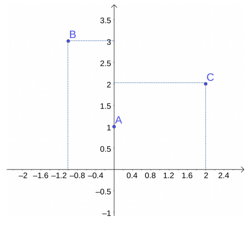
Existe uma correspondência biunívoca entre pares ordenados e pontos do plano cartesiano.
2.2 Produto cartesiano
Sejam \(A\) e \(B\) conjuntos não vazios. O produto cartesiano de \(A\) com \(B\) é o conjunto formado por todos os pares ordenados \((a,b)\) em que \(a\in A\) e \(b\in B\):
\[A\times B = \{(a,b)\ :\ a\in A,\ b\in B\}\]
Da definição de produto cartesiano, vemos que se \(A\) tem \(n\) elementos e \(B\) tem \(m\) elementos, então \(A\times B\) tem \(nm\) elementos.
Se \(A=\emptyset\) ou \(B=\emptyset\), definimos \(A\times B = \emptyset\).
Exemplo:
- Se \(A=\{2,3,4\}\) e \(B=\{1,2\}\), então \(A\times B = \{(2,1), (2,2), (3,1), (3,2), (4,1), (4,2)\}\) \(B\times A = \{(1,2), (1,3), (1,4), (2,2), (2,3), (2,4)\}\) e \(B\times B=B^2=\{(1,1), (1,2), (2,1), (2,2)\}\).

Um caso importante é o produto cartesiano \(\mathbb{R}\times\mathbb{R} = \mathbb{R}^2 = \{(x,y)\ :\ x,y\in\mathbb{R}\}\) (plano cartesiano).
No caso em que \(A = [a,b]\) e \(B = [c,d]\) são intervalos da reta, então \(A\times B = \{(x,y)\ :\ x\in[a,b] \ \mbox{ e }\ y\in[c,d]\}\).
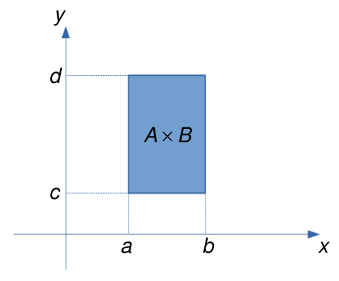
2.3 Relação binária
Considere os conjuntos \(A = \{2,3,4\}\) e \(B = \{2,3,4,5,6\}\). O produto cartesiano de \(A\) com \(B\) é dado por \(A\times B = \{(x,y)\ :\ x\in A,\ y\in B\}\) e contém \(3\times 5 = 15\) elementos.
Consideremos agora os pares ordenados de \((x,y)\in A\times B\) tais que \(x\) é divisor de \(y\),
\[R = \{(x,y)\in A\times B\ :\ x \mbox{ é divisor de } y\} = \{(2,2), (2,4), (2,6), (3,3), (3,6), (4,4)\}\]
O conjunto \(R\) é um exemplo de relação binária de \(A\) em \(B\).
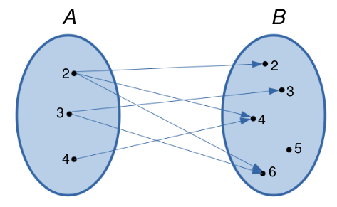
Dessa forma, dados dois conjuntos \(A\) e \(B\), uma relação binária de \(A\) em \(B\) é um conjunto \(R\) tal que \(R\subset A\times B\). Em particular, para qualquer conjunto \(A\), uma relação binária em \(A\) é um subconjunto \(R\subset A\times A\).
O conjunto \(A\) é chamado conjunto de partida da relação binária e o conjunto \(B\) é chamado conjunto de chegada.
Se o par ordenado \((x,y)\) pertence à relação binária \(R\), escrevemos \(xRy\) (\(x\) está relacionado com \(y\)), ou seja,
\[(x,y)\in R\ \Longleftrightarrow\ xRy\]
Exemplos:
- Sejam os conjuntos \(A= \{1,2,3\}\) e \(B= \{1,2,3,4,5\}\). Consideremos a relação \(R=\{(x,y)\in A\times B\ :\ y=x+2\}\).
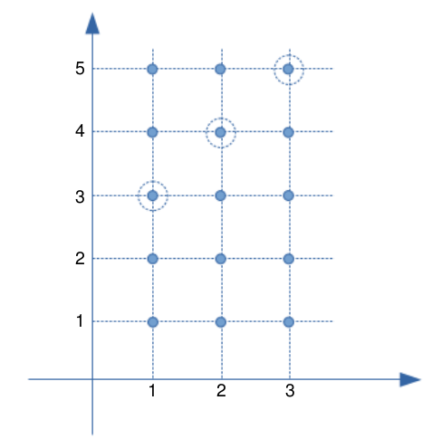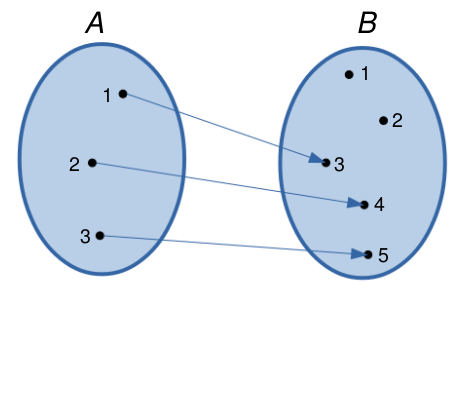
- Sejam os conjuntos \(A = B = [0,1]\). Consideremos a relação \(R = \{(x,y)\in A\times B\ :\ x = y\}\).
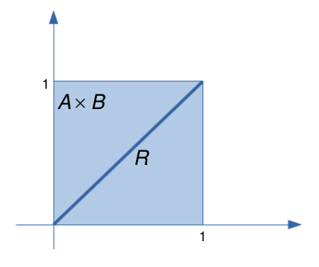
2.4 Domínio e Imagem de uma relação
Dada uma relação binária \(R\) de \(A\) em \(B\), o domínio de \(R\) é o conjunto de todos os primeiros elementos dos pares ordenados em \(R\), ou seja,
\[D_{R} = \{x\in A\ :\ (x,y)\in R\}\subset A\]
Cháma-se imagem de \(R\) ao conjunto de todos os segundos elementos dos pares ordenados em \(R\), ou seja,
\[Im_{R} = \{y\in B\ :\ (x,y)\in R\}\subset B\] Nos exemplos anteriores, temos que:
- \(D_{R} =\{1,2,3\}=A\), \(Im_{R}=\{3,4,5\}\).
- \(D_R= A\), \(Im_{R}=B\).
Se \(A = \{x\in\mathbb{R}\ :\ 1\leq x\leq 3\}\), \(B = \{y\in\mathbb{R}\ :\ 1\leq y\leq 4\}\) e \(R = \{(x,y)\in A\times B\ :\ y = 2x\}\), então, temos que \(D_{R} = \{x\in A\ :\ 1\leq x\leq 2\}\) e \(Im_{R} = \{y\in B\ :\ 2\leq y\leq 4\}\).
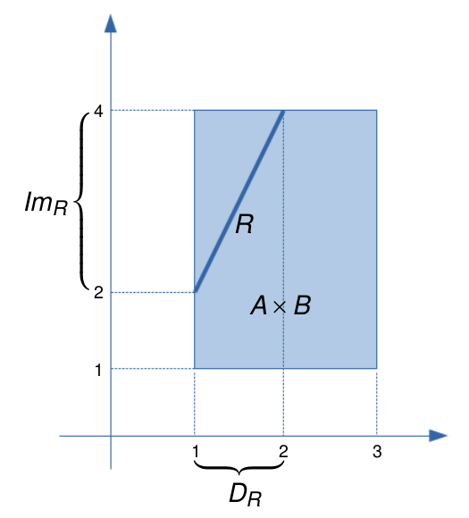
2.5 Relação inversa
Dada uma relação binária \(R\) de \(A\) em \(B\), a relação inversa \(R^{-1}\) de \(B\) em \(A\) é definida por
\[R^{-1} = \{(y,x)\in B\times A\ :\ (x,y)\in R\}\]
Exemplos:
- Sejam os conjuntos \(A = \{2,3,4,5\}\) e \(B = \{1,3,5,7\}\). Se \(R = \{(x,y)\in A\times B\ :\ x<y\} = \{(2,3), (2,5), (2,7), (3,5), (3,7), (4,5), (4,7), (5,7)\}\), então \(R^{-1} = \{(x,y)\ :\ x>y\} = \{(3,2), (5,2), (7,2), (5,3), (7,3), (5,4), (7,4), (7,5)\}\).
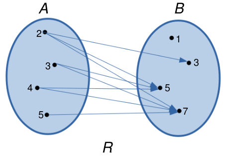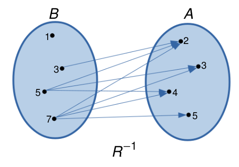
- Sejam os conjuntos \(A = \{x\in\mathbb{R}\ :\ 1\leq x\leq 2\}\) e \(B = \{y\in\mathbb{R}\ :\ 1\leq y\leq 4\}\). Se \(R = \{(x,y)\in A\times B\ :\ y = 2x\}\), então \(R^{-1} = \{(x,y)\in B\times A\ :\ y = \displaystyle\frac{x}{2}\}\).
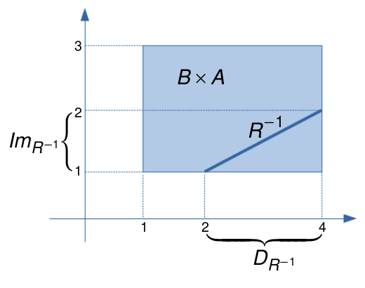
Propriedades:
- \(D_{R^{-1}} = Im_{R}\) (o domínio de \(R^{-1}\) é igual à imagem de \(R\))
- \(Im_{R^{-1}} = D_{R}\) (a imagem de \(R^{-1}\) é igual ao domínio de \(R\))
- \((R^{-1})^{-1} = R\) (a relação inversa de \(R^{-1}\) é igual a \(R\))
2.6 O conceito de função
Sejam \(A\) e \(B\) conjuntos não vazios. Uma aplicação ou função \(f\) de \(A\) em \(B\) é uma relação binária tal que para todo \(x\in A\), existe um único ponto \(y\in B\) tal que \((x,y)\in R\). Em notação matemática:
\[R \mbox{ é função }\ \Longleftrightarrow\ \forall x\in A,\ \exists\,!\ y\in B \mbox{ tal que } xRy\]
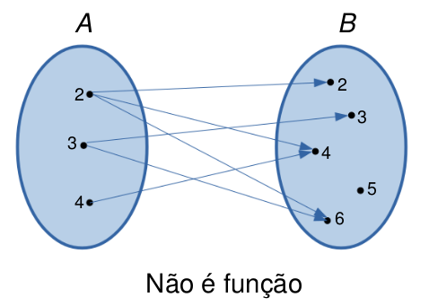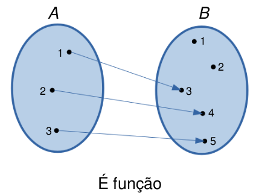
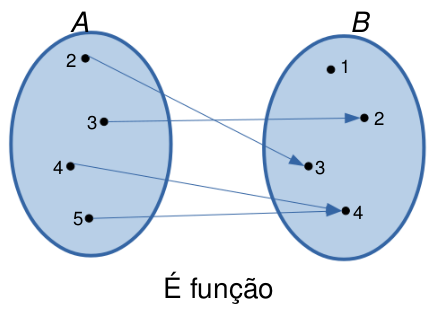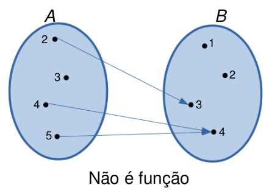
Observar que a primeira relação não é função, uma vez que, por exemplo, o elemento \(2\in A\) é mapeado em três elementos em \(B\) (\(2,4\) e \(6\)). A segunda e terceira relação são funções, pois satisfazem a definição. Finalmente, a quarta relação não é função, pois o elemento \(3\in A\) não é mapeado em nenhum elemento de \(B\).
Usaremos a notação \(f: A \longrightarrow B\) para denotar uma função \(f\) de \(A\) em \(B\). O conjunto \(A\) recebe o nome de domínio da função (denotado por \(D_f\)) e o conjunto \(B\) é chamado de contradomínio da função.
Se a função \(f\) mapea o elemento \(x\in A\) no elemento \(y\in B\), denotamos isso por \(y=f(x)\). Assim, por exemplo, na terceira relação acima, temos que \(3=f(2)\), \(2=f(3)\) e \(4=f(4)=f(5)\).
Outro conjunto importante é a imagem da função (denotada por \(Im_f\)), definida por
\[Im_f = \{y\in B\ :\ y=f(x), \mbox{ para algum } x\in A\}\]
Por exemplo, na terceira relação (a qual é função), temos que o conjunto imagem é \(Im_f=\{2,3,4\}\). Observar que, neste caso, \(1\not\in Im_f\), pois não existe um elemento \(x\) em \(A\) tal que \(1 = f(x)\).
Geralmente, quando o domínio de uma função não é explicitamente dado, consideramos o domínio como sendo o conjunto dos números reais em que a função está definida.
Exemplo: Seja \(f(x)=\displaystyle\frac{1}{x-2}\). Nesse caso, dado que a função não está definida para \(x=2\), consideramos \(D_f=\mathbb{R}-\{2\}=\{x\in\mathbb{R}\ :\ x\neq 2\}\).
2.7 Gráfico de funções
Consideremos uma função \(f:A\longrightarrow B\). Em geral, consideraremos funções em que \(A\) e \(B\) são subconjuntos da reta. Nesse caso, o gráfico de \(f\) é o subconjunto de \(\mathbb{R}^2\) definido por
\[\mathrm{Graf}(f) = \{(x,f(x))\in\mathbb{R}^2\ :\ x\in A\}\]
Exemplos de funções:
- \(f:\mathbb{R}\longrightarrow \mathbb{R}\), definida por \(f(x) = x\). Neste caso, \(D_f=\mathbb{R}\) e \(Im_f=\mathbb{R}\).
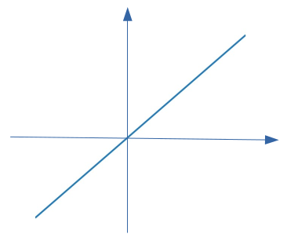
- \(f:\mathbb{R}\longrightarrow \mathbb{R}\), definida por \(f(x) = x^2\). Neste caso, \(D_f=\mathbb{R}\) e \(Im_f = \mathbb{R}_{\geq 0}\).
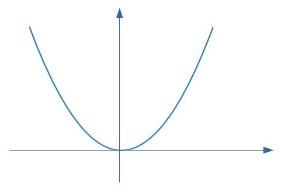
- \(f: [-1,2]\longrightarrow \mathbb{R}\), definida por \(f(x) = x^3\). Neste caso, \(D_f=[-1,2]\) e \(Im_f=[-1,8]\).

Os seguintes são exemplos de relações que não são funções, pois é possível traçar uma reta vertical que corta ao gráfico em dois pontos.
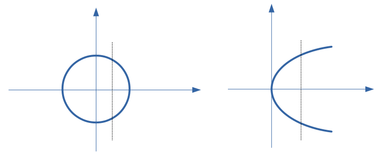
2.8 Funções iguais
Duas funções \(f:A\longrightarrow B\) e \(g:C\longrightarrow D\) são iguais se:
- Os domínios são iguais: \(A=C\);
- Para todo \(x\), \(f(x)=g(x)\).
Se as funções \(f\) e \(g\) são iguais, escrevemos \(f=g\). Nesse caso, se verifica facilmente que \(Im_f = Im_g\).
2.9 Características importantes das funções
2.9.1 Zeros (ou raíçes) de uma função
Os zeros de uma função é definido como o conjunto de pontos \(x\in D_f\) que satisfazem \(f(x)=0\). Nos exemplos anteriores, vemos que \(x=0\) é zero das funções \(f_1(x)=x\), \(f_2(x)=x^2\) e \(f_3(x)=x^3\), pois se verifica que \(f(0)=0\).
2.9.2 Sinal de uma função
Quando graficamos funções, uma característica importante a ser examinada é o sinal da função, isto é, ver quais são os valores de \(x\in\mathbb{R}\) tais que \(f(x)>0\), \(f(x)=0\) ou \(f(x)<0\).
Por exemplo, seja a função \(y=f(x)\) cujo gráfico é dado por
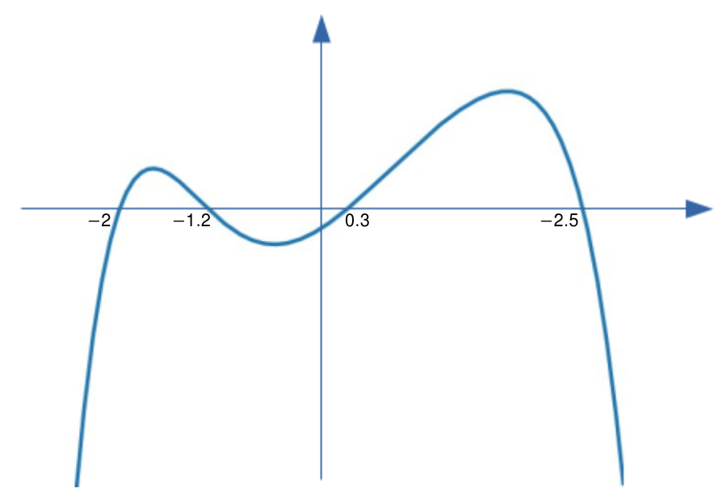
Os zeros da função são \(x_1=-2\), \(x_2=-1.2\), \(x_3=0.3\) e \(x_4=2.5\), ou seja, nestes pontos, temos que \(f(x)=0\). Do gráfico, podemos observar o seguinte comportamento:
- Para \(x< -2\), temos que \(f(x)<0\).
- Para \(-2<x<-1.2\), temos que \(f(x)>0\).
- Para \(-1.2<x<0.3\), temos que \(f(x)<0\).
- Para \(0.3<x<2.5\), temos que \(f(x)>0\).
- Para \(x>2.5\), temos que \(f(x)<0\).
Dessa forma, identificamos \(5\) intervalos onde a função não muda de sinal.
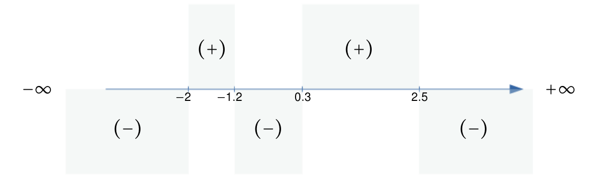
2.10 Tipos de funções
2.10.1 Função constante
Uma função \(f\) tal que \(f(x)=c\) para todo \(x\in D_f\), em que \(c\) é uma constante, é chamada de função constante. Nesse caso, sempre temos que \(Im_f=\{c\}\).
Exemplos:
\(f:\mathbb{R}\longrightarrow \mathbb{R}\) definida por \(f(x)=2\), para todo \(x\). Nesse caso, \(D_f=\mathbb{R}\) e \(Im_f=\{2\}\).
\(f:\mathbb{R}\longrightarrow \mathbb{R}\) definida por \(f(x)=-3\), para todo \(x\). Nesse caso, \(D_f=\mathbb{R}\) e \(Im_f=\{-3\}\).
\(f:\mathbb{R}\longrightarrow \mathbb{R}\) definida por \(f(x)=0\), para todo \(x\). Nesse caso, \(D_f=\mathbb{R}\) e \(Im_f=\{0\}\).
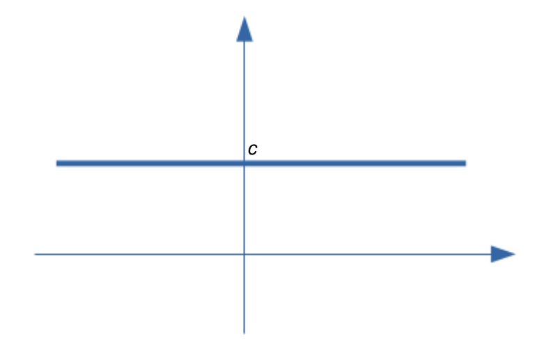
2.10.2 Função linear
Uma função \(f:\mathbb{R}\longrightarrow\mathbb{R}\) definida por \(f(x)=ax\), para todo \(x\), em que \(a\neq 0\) é uma constante, é chamada função linear. Observar que \(D_f=\mathbb{R}\) e \(Im_f=\mathbb{R}\). Em particular, quando \(a=1\), a função \(f(x)=x\), para todo \(x\), é chamada função identidade. O gráfico da função identidade é mostrado a seguir:
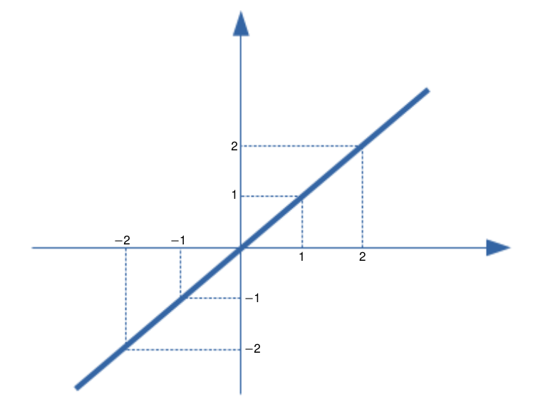
2.10.3 Função afim
Uma função \(f:\mathbb{R}\longrightarrow \mathbb{R}\) definida por \(f(x)=ax+b\), para todo \(x\), em que \(a\neq 0\) e \(b\) são constantes, é chamada função afim ou de \(1º\) grau. Se \(f\) é função afim, então \(D_f=\mathbb{R}\) e \(Im_f=\mathbb{R}\).
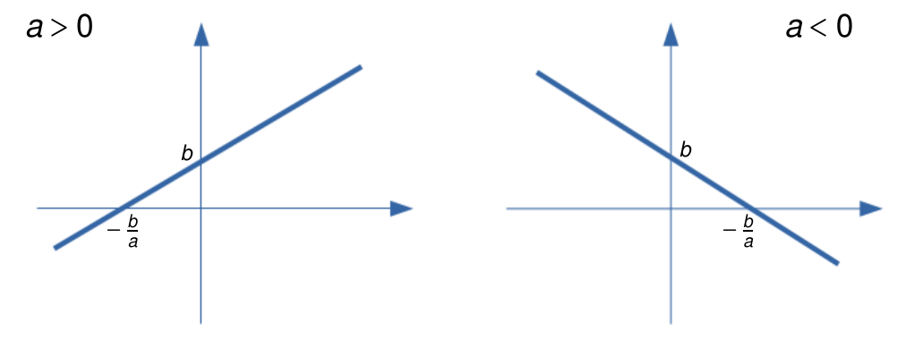
O gráfico da função afim \(f(x)=ax+b\) é uma reta que corta o eixo de ordenada em \(y=b\) (ordenada ao origem) e o eixo de absiça em \(x=-\displaystyle\frac{b}{a}\) (zero da função). Observar que quando \(b=0\), obtemos a função linear definida anteriormente.
O coeficiente \(a\) da função afim é chamado de coeficente angular ou declividade da reta. O coeficiente \(b\) é chamado de coeficiente linear. Assim, se \(a>0\), dizemos que o gráfico da função afim tem declividade positiva, caso contrário (\(a<0\)) dizemos que tem declividade negativa.
A obtenção dos zeros da função afim permitem fazer o seguinte análise do sinal da função:
Se \(a>0\), então \(f(x)<0\) se \(x<-\displaystyle\frac{b}{a}\) e \(f(x)>0\) se \(x>-\displaystyle\frac{b}{a}\).
Se \(a<0\), então \(f(x)>0\) se \(x<-\displaystyle\frac{b}{a}\) e \(f(x)<0\) se \(x>-\displaystyle\frac{b}{a}\).
Exemplo: Obtenha a equação da reta que passa pelo ponto \((1,3)\) e tem coeficiente angular igual a \(2\).
Temos que a equação geral da reta é \(f(x) = ax + b\). Dado que o coeficiente angular é \(2\), então \(a=2\). Além disso, a reta passa pelo ponto \((1,3)\). Logo, fazendo \(x=1\), temos que \(f(1)=2\cdot1 + b=3\), o qual implica que \(b=1\). Assim, concluimos que a reta tem equação \(f(x)=2x+1\). Observar que a reta corta o eixo \(x\) no ponto \(x_1=-\displaystyle\frac{b}{a}=-\frac{1}{2}\). A ordenada ao origem é \(b=1\).
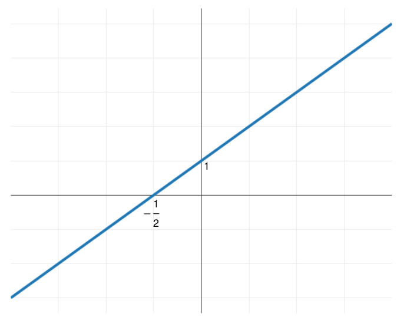
2.10.4 Função quadrática
Uma função \(f:\mathbb{R}\longrightarrow \mathbb{R}\) na forma \(f(x)=ax^2+bx+c\), em que \(a\neq0\), \(b\) e \(c\) são constantes, é chamada função quadrática ou de \(2º\) grau.
Exemplos de funções quadráticas:
- \(f(x)=2x^2-3x+1\), em que \(a=2\), \(b=-3\) e \(c=1\);
- \(f(x)=-5x^2-3\), em que \(a=-5\), \(b=0\) e \(c=-3\);
- \(f(x)=\displaystyle\frac{2}{5}x^2+\frac{3}{2}x\), em que \(a=\displaystyle\frac{2}{5}\), \(b=\displaystyle\frac{3}{2}\) e \(c=0\).
O gráfico de uma função quadrática é uma parábola cuja concavidade é voltada para cima se \(a>0\) e voltada para embaixo se \(a<0\).
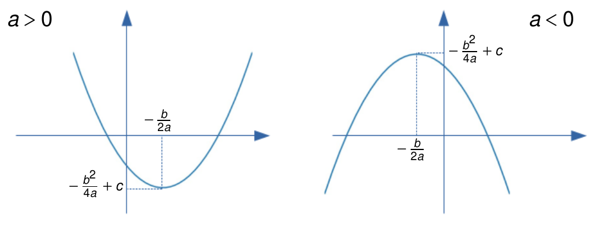
O gráfico da função quadrática atinge seu valor mínimo (quando \(a>0\)) ou seu valor máximo (quando \(a<0\)) no ponto \(x=-\displaystyle\frac{b}{2a}\) (este fato pode ser provado usando o conceito de derivada). Nesses pontos, a função atinge o valor
\[f\!\left(-\displaystyle\frac{b}{2a}\right) = a\left\{-\displaystyle\frac{b}{2a}\right\}^2 + b\left\{-\displaystyle\frac{b}{2a}\right\} + c = -\frac{b^2}{4a}+c=-\frac{b^2-4ac}{4a}=-\frac{\Delta}{4a}\] O valor \(\Delta=b^2-4ac\) é chamado de discriminante.
O par ordenado \(V=(-\displaystyle\frac{b}{2a}\ ,\ -\frac{b^2}{4a}+c)=(-\displaystyle\frac{b}{2a}\ ,\ -\frac{\Delta}{4a})\) é chamado vértice da parábola.
Observar que \(D_f=\mathbb{R}\). Além disso:
Se \(a>0\), então \(Im_f=\{y\in\mathbb{R}\ :\ y\geq -\displaystyle\frac{\Delta}{4a}\}\).
Se \(a<0\), então \(Im_f=\{y\in\mathbb{R}\ :\ y\leq -\displaystyle\frac{\Delta}{4a}\}\).
Para achar os zeros de uma função quadrática, observemos que
\[ax^2+bx+c=0\ \Longrightarrow\ x=\displaystyle\frac{-b \pm \sqrt{b^2-4ac}}{2a}=\frac{-b\pm \sqrt{\Delta}}{2a}\] O valor de \(\Delta\) permite “discriminar” entre os seguintes casos:
- Se \(\Delta>0\), então a função quadrática tem exatamente duas raíces reais.
- Se \(\Delta=0\), então a função quadrática tem exatamente uma raiz real.
- Se \(\Delta<0\), então a função quadrática não tem raíces reais.
As três situações são ilustradas no seguinte gráfico quando \(a>0\).
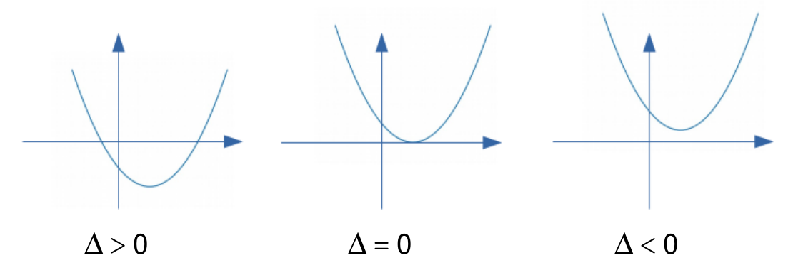
Para fazer uma análise do sinal da função quadrática \(f(x)=ax^2 +bx +c\), devemos considerar o sinal do discriminante \(\Delta\) e da constante \(a\). Assim, temos seis casos possíveis:
- Se \(\Delta>0\), então temos duas raíçes reais e distintas, digamos \(x_1\) e \(x_2\), sendo \(x_1<x_2\) e \(f(x_1)=f(x_2)=0\). Nesse caso, temos duas situações: se \(a>0\), temos que \(f(x)>0\) para \(x<x_1\) e \(x>x_2\), e \(f(x)<0\) para \(x_1<x<x_2\). Se \(a<0\), então \(f(x)<0\) para \(x<x_1\) e \(x>x_2\), e \(f(x)>0\) para \(x_1<x<x_2\).
- Se \(\Delta=0\), então temos uma única raíz real \(x_1\), sendo \(f(x_1)=0\). Assim temos que se \(a>0\), então \(f(x)>0\) para todo \(x\neq x_1\). Se \(a<0\), então \(f(x)<0\) para todo \(x\neq x_1\).
- \(\Delta<0\), então não existem raíçes reais. Portanto, se \(a>0\), então \(f(x)>0\) para todo \(x\). Se \(a<0\), então \(f(x)<0\) para todo \(x\).
Como exemplo, considere a função quadrática \(f(x)=x^2-2x+1\). Neste caso, \(a=c=1\) e \(b=-2\). Observar que \(\Delta=(-2)^2 - 4\cdot1\cdot1=0\). Logo, a função tem uma única raíz real \(x_1=\displaystyle\frac{-b\pm\sqrt{\Delta}}{2a}=1\). Dado que \(a=1>0\), vemos que a \(f(x)>0\) para \(x\neq 1\) e \(f(1)=0\). A ordenada ao origem é \(-\displaystyle\frac{b}{2a}=1\).
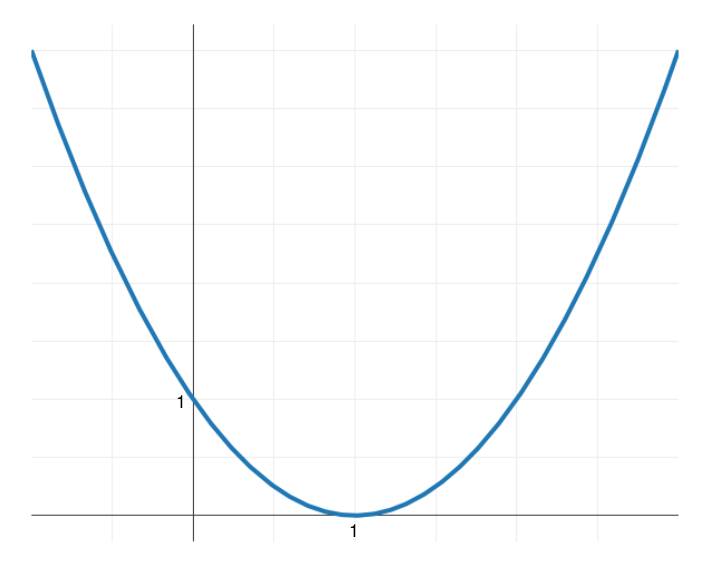
2.10.5 Função cúbica
Uma função cúbica é da forma \(f(x)=ax^3+bx^2+cx+d\), sendo \(a\neq0\). O gráfico do caso especial \(f(x)=x^3\) (quando \(a=1\) e \(b=c=d=0\)) é apresentado a seguir:
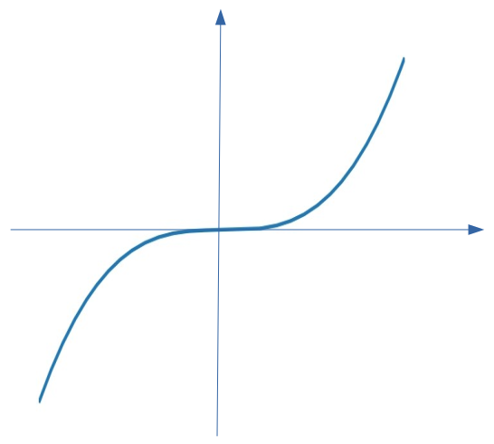
Temos que \(D_f=\mathbb{R}\). Além disso, \(Im_f={R}\), pois dado \(y\in\mathbb{R}\), existe \(x=\sqrt[3]{y}\) tal que \(f(x)=f(\sqrt[3]{y})=(\sqrt[3]{y})^3=y\).
O zero da função é \(x=0\).
Observar que \(f(x)=x^3\) é uma função crescente, ou seja
\[\mbox{Se }\ x_1<x_2\ \Longrightarrow\ x_1^3<x_2^3\]
2.10.6 Função recíproca
A função recíproca é definida por
\[f(x)=\frac{1}{x}\]
Observar que \(D_f=\{x\in\mathbb{R}\ :\ x\neq0\}=\mathbb{R}-\{0\}\), pois a função não está definida em \(x=0\). A imagem é \(Im_f=\mathbb{R}-\{0\}\), pois não existe \(x\in D_f\) tal que \(f(x)=0\).
Se \(x_1<x_2<0\), então \(\displaystyle\frac{1}{x_2}<\frac{1}{x_1}<0\). Se \(0<x_1<x_2\), então \(0<\displaystyle\frac{1}{x_2}<\frac{1}{x_1}\). Portanto, a função recíproca é decrescente.
A função tem por gráfico uma hipérbole equilátera.
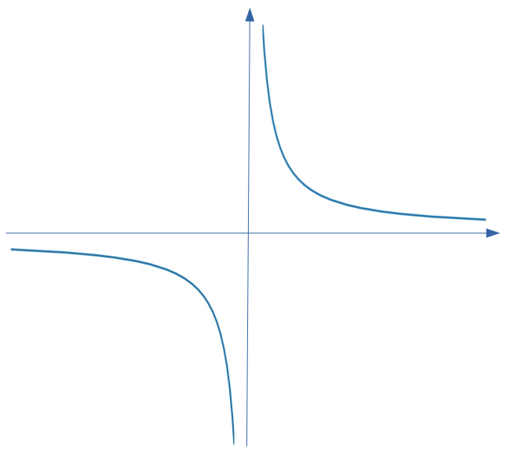
2.10.7 Função Modular
Dado um número real \(x\), definimos o módulo (ou valor absoluto) de \(x\) como
\[|\,x\,|=x,\ \mbox{ se } x\geq0,\quad |\,x\,|=-x,\ \mbox{ se } x<0\]
Assim, por exemplo, \(|\,5\,|=5\) e \(|\,-3\,|=3\).
Da definição de módulo decorrem as seguintes propriedades:
\(|\,x\,|\geq0\), \(\forall x\in\mathbb{R}\)
\(|\,x\,|=0\ \Leftrightarrow\ x=0\)
\(|\,x\cdot y\,|=|\,x\,|\cdot|\,y\,|\), \(\forall x,y\in\mathbb{R}\)
\(|\,x\,|^2=x^2\), \(\forall x\in\mathbb{R}\)
\(x\leq|\,x\,|\), \(\forall x\in\mathbb{R}\)
\(|\,x+y\,|\leq |\,x\,|+|\,y\,|\), \(\forall x,y\in\mathbb{R}\) (desigualdade triangular)
\(|\,x-y\,|\geq |\,x\,|-|\,y\,|\), \(\forall x,y\in\mathbb{R}\)
\(|x|\leq a\) e \(a>0\ \Leftrightarrow\ -a\leq x\leq a\)
\(|\,x\,|\geq a\) e \(a>0\ \Leftrightarrow\ x\leq -a\) ou \(x\geq a\)
Definimos a função modular como sendo a função \(f:\mathbb{R}\longrightarrow\mathbb{R}\) dada por \(f(x)=|\,x\,|,\ x\in\mathbb{R}\).
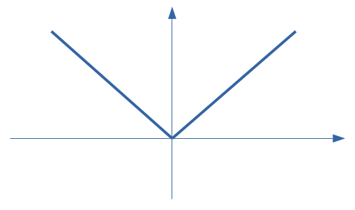
Observar que \(f(x)=|\,x\,|\geq0\) para todo \(x\) e, portanto, \(Im_f=\mathbb{R}_{\geq0}\).
2.11 Funções definidas por partes
Uma função \(f\) pode estar definida por partes, como mostra o seguinte exemplo:
Exemplo: Graficar a função \(f\) definida por
\[f(x)=-x\ \mbox{ se }\ x<-1,\quad f(x)=x^2-1\, \mbox{ se }\ x\geq1\]
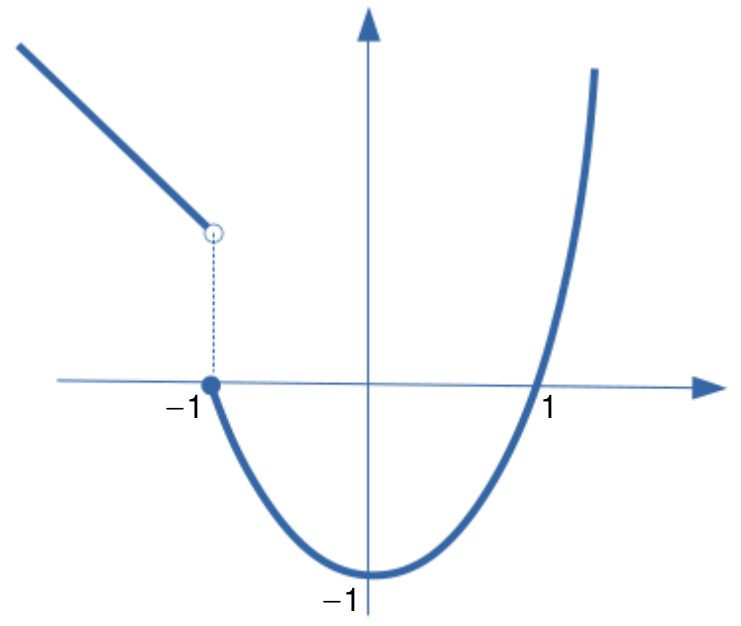
2.11.1 Gráfico de funções modulares
Exemplo 1: Graficar a função \(f(x)=|\,2x\,|\).
Observar que \(f(x)=2x\) se \(x\geq0\), e \(f(x)=-2x\) se \(x<0\).
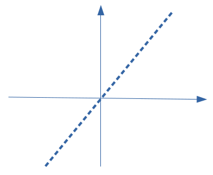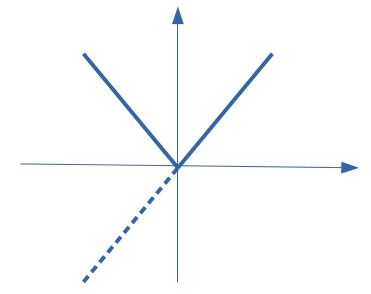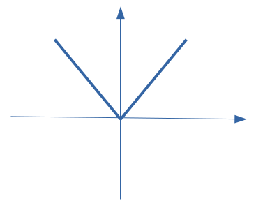
Exemplo 2: Graficar a função \(f(x)=|\,x-1\,|\).
Observar que \(f(x)=x-1\) se \(x\geq1\), e \(f(x)=1-x\) se \(x<1\).
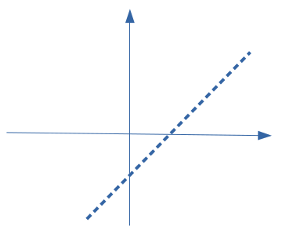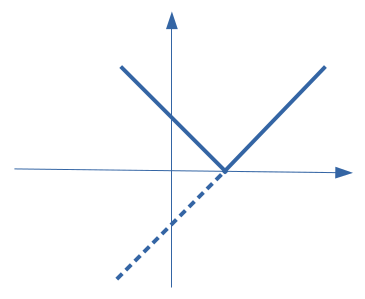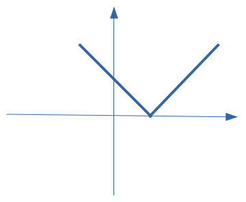
Exemplo 3: Graficar a função \(f(x)=|\,x^2-1\,|\).
Observar que \(f(x)=x^2-1\) se \(x\geq1\) ou \(x\leq-1\), e \(f(x)=1-x^2\) se \(-1<x<1\).
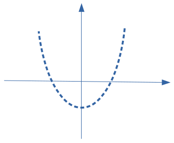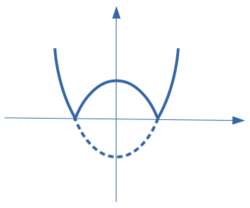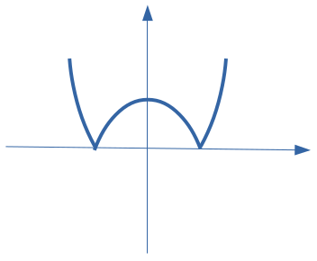
2.11.2 Equações modulares
Lembrar que, por definição de módulo
\[|\,x\,|=a\ \Longleftrightarrow\ x=a\ \mbox{ ou }\ x=-a\]
Assim, usando essa propriedade, podemos resolver equações modulares.
Exemplo 1: Resolver \(|\,2x-1\,|=5\).
Temos que \[|\,2x-1\,|=5\ \Longleftrightarrow\ 2x-1=5\ \mbox{ ou }\ 2x-1=-5\]
Se \(2x-1=5\), então \(x=3\). Se \(2x-1=-5\), então \(x=-2\). Logo, o conjunto de soluções da equação \(|\,2x-1\,|=5\) é dado por \(S=\{3,-2\}\).
Exemplo 2: Resolver \(|\,3x-1\,|=|\,2x+3\,|\).
Pela propriedade de módulo, devemos ter \(|\,a\,|=|\,b\,|\ \Leftrightarrow\ a=b\ \mbox{ ou }\ a=-b\). Portanto
\[|\,3x-1\,|=|\,2x+3\,|\ \Longleftrightarrow\ 3x-1=2x+3\ \mbox{ ou }\ 3x-1=-2x-3\]
Se \(3x-1=2x+3\), então \(x=4\). Se \(3x+1=-2x-3\), então \(x=-\displaystyle\frac{2}{5}\). Logo, o conjunto solução da equação \(|\,3x-1\,|=|\,2x+3\,|\) é dado por \(S=\{4,-\displaystyle\frac{2}{5}\}\).
Exemplo 3: Resolver \(|\,x+1\,|=3x+2\).
Pela propriedade de módulo, sabemos que \(|\,a\,|\geq0\) para todo \(a\in\mathbb{R}\). Assim, temos que
\[3x+2\geq0\ \Rightarrow\ x\geq-\displaystyle\frac{2}{3}\] Novamente, temos duas possibilidades: \(x+1=3x+2\) ou \(x+1=-3x-2\).
Se \(x+1=3x+2\), então \(x=-\displaystyle\frac{1}{2}\). Se \(x+1=-3x-2\), então \(x=-\displaystyle\frac{3}{4}\). Observar que das duas possíves soluções, somente a primeira satisfaz a condição de ser maior que \(-\displaystyle\frac{2}{3}\). Assim, a única solução da equação \(|\,x+1\,|=3x+2\) é \(x=-\displaystyle\frac{1}{2}\).
2.11.3 Inequações modulares
Usando as seguintes propriedades de módulo (para \(a>0\)):
\[|\,x\,|\leq a\ \ \Longleftrightarrow\ -a\leq x\leq a\]
\[|\,x\,|\geq a\ \Longleftrightarrow\ x\geq a\ \mbox{ ou }\ x\leq -a\] Podemos resolver inequações modulares.
Exemplo 1: Resolver \(|\,2x+1\,|<3\)
Das propriedades de módulo, temos que
\[|\,2x+1\,|<3\ \Leftrightarrow\ -3<2x+1<3\ \Leftrightarrow\ -4<2x<2\ \Leftrightarrow\ -2<x<1\]
Assim, o conjunto solução é dado por \(S=\{x\in\mathbb{R}\ :\ -2<x<1\}\).
Exemplo 2: Resolver \(|\,2x+1\,|>5\)
Das propriedades de módulo, resulta
\[|\,4x+1\,|>5\ \Leftrightarrow\ 4x+1>5\ \mbox{ ou }\ 4x+1<-5\ \Leftrightarrow\ x>1\ \mbox{ ou }\ x<-\displaystyle\frac{3}{2}\]
Portanto, o conjunto solução é dado por \(S=\{x\in\mathbb{R}\ :\ x>1\ \mbox{ ou }\ x<-\displaystyle\frac{3}{2}\}\)
Exemplo 3: Resolver \(|\,x+1\,|\leq 3x-2\)
Das propriedades de módulo, temos que
\[-3x+2\leq x+1\leq 3x-2\] Da primeira desigualdade, obtemos
\[-3x+2\leq x+1\ \Leftrightarrow\ 4x\geq1\ \Leftrightarrow\ x\geq\displaystyle\frac{1}{4}\]
Da segunda desigualdade, resulta
\[x+1\leq3x-2\ \Leftrightarrow\ 2x\geq3\ \Leftrightarrow\ x\geq\displaystyle\frac{3}{2}\] Dado que ambas desigualdades devem ser satisfeitas ao mesmo tempo, o conjunto solução é dado por
\[S=\{x\in\mathbb{R}\ :\ x\geq\displaystyle\frac{1}{4}\}\cap\{x\in\mathbb{R}\ :\ x\geq\displaystyle\frac{3}{2}\}=\{x\in\mathbb{R}\ :\ x\geq\displaystyle\frac{3}{2}\}\]
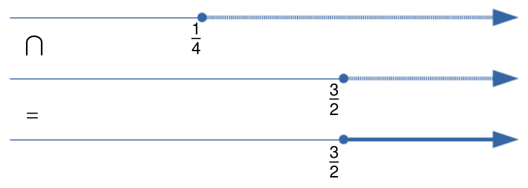
Exemplo 4: Resolver \(|\,3x-1\,|>2x+2\)
Das propriedades de módulo, temos que
\[|\,3x-1\,|>2x+2\ \Leftrightarrow\ 3x-1>2x+2\ \mbox{ ou }\ 3x-1<-2x-2\]
Da primeira desigualdade, resulta
\[3x-1>2x+2\ \Leftrightarrow\ x>3\]
Da segunda desigualdade, temos que
\[3x-1<-2x-2\ \Leftrightarrow\ x<-\displaystyle\frac{1}{5}\]
Dado que pelo menos uma das desigualdades deve ser satisfeita, o conjunto solução é dado por
\[S=\{x\in\mathbb{R}\ :\ x>3\}\cup \{x\in\mathbb{R}\ :\ x<-\displaystyle\frac{1}{5}\}=\{x\in\mathbb{R}\ :\ x<-\displaystyle\frac{1}{5}\ \mbox{ou}\ x>3\}\]
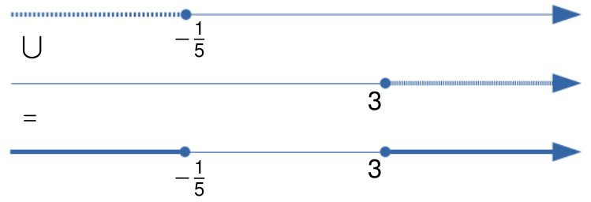
Exemplo 5: Resolver \(|\,2x-6\,|-|\,x\,|\leq 4-x\)
Observar que
\[|\,2x-6\,|=2x-6\ \mbox{ se }\ x\geq 3, \quad |\,2x-6\,|=-2x+6\ \mbox{ se }\ x<3\]
\[|\,x\,|=x\ \mbox{ se }\ x\geq0, \quad |\,x\,|=-x\ \mbox{ se }\ x<0\]
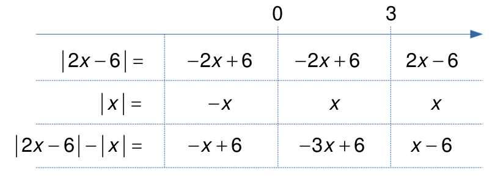
1º) Se \(x\geq3\), então
\[|\,2x-6\,|-|\,x\,|\leq 4-x\ \Longleftrightarrow\ x-6\leq4-x\ \Longleftrightarrow\ x\leq5\]
Nesse caso, o conjunto solução é dado por
\[S_1=[3,+\infty)\cap(-\infty,5]=[3,5]\]
2º) Se \(0\leq x<3\), então
\[|\,2x-6\,|-|\,x\,|\leq 4-x\ \Longleftrightarrow\ -3x+6\leq 4-x\ \Longleftrightarrow\ x\geq1\] Nesse caso, o conjunto solução é dado por
\[S_2=[0,3)\cap[1,+\infty)=[1,3)\] 3º) Se \(x<0\), então
\[|\,2x-6\,|-|\,x\,|\leq 4-x\ \Longleftrightarrow\ -x+6\leq 4-x\ \Longleftrightarrow\ 6\leq4\] o qual é um absurdo. Nesse caso, o conjunto solução é \(S_3=\emptyset\).
Assim, temos que o conjunto solução da inequação \(|\,2x-6\,|-|\,x\,|\leq 4-x\) é dado por
\[S=S_1\cup S_2\cup S_3=[3,5]\cup[1,3)\cup\emptyset=[1,5]\]
2.12 Exercícios
- Dados os conjuntos \(A=\{1,3,4\}\), \(B=\{-2,1\}\) e \(C=\{-1,0,2\}\), represente pelos elementos e pelo gráfico cartesiano os seguintes produtos:
- \(A\times B\)
- \(B\times A\)
- \(A\times C\)
- \(C\times A\)
- Dados os conjuntos \(A=\{1,2,3,4\}\) e \(B=\{x\in\mathbb{R}\ :\ 1\leq x\leq 4\}=[1,4]\), represente gráficamente os conjuntos:
- \(A\times B\)
- \(B\times A\)
- \((A\times B)\cup (B\times A)\)
- Dado o conjunto \(A=\{1,2,3,4,5,6\}\), enumere os pares ordenados e construa o gráfico cartesiano da relação \(R\) em \(A\) dada por
\[\{(x,y)\in A^2\ :\ \mathrm{MDC}(x,y)=2\}\]
A função \(f: \mathbb{R}\longrightarrow \mathbb{R}\) tem a propriedade \(f(m\cdot x)=m\cdot f(x)\), para todo \(m,x\in\mathbb{R}\). Calcule \(f(0)\)
Seja \(f\) uma função definida no conjunto dos números naturais, tal que
\[f(n+1)=2\,f(n)+3,\ \mbox{ para todo }\ n\in\mathbb{N}\]
- Supondo que \(f(0)=0\), calcule \(f(1),f(2),f(3),\ldots\ \) e descubra a fórmula geral de \(f(n)\).
- Prove por indução finita a fórmula descoberta.